БИОГРАФИЯ Н.Н.АЛЕКСАНДРОВА
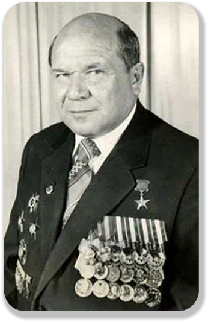
Николай Николаевич Александров родился 11 июня 1917 года в городе Брянске в семье учителей. Кроме него у родителей было еще двое детей.
Вскоре после его рождения семья переехала в город Орел. Здесь их застала Гражданская война. Мать и отец в то время преподавали математику и физику. Получали скудный паек, меняли вещи на соль, основным продуктом питания была капуста.
В 1935 году Николай Николаевич окончил 10 классов полной средней школы №7 в г. Орле, некоторое время работал там же инструктором по печати горкома ВЛКСМ. Орловская комсомольская организация, учитывая незаурядные способности и страстное желание учиться, рекомендовала его для поступления в высшее учебное заведение.
Однако страна нуждалась тогда в военных медиках, и по комсомольскому призыву он подает документы в военно-медицинскую академию. Так подсказала ему гражданская совесть, желание быть там, где нужнее.
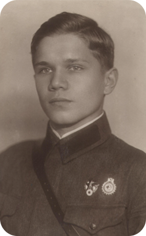
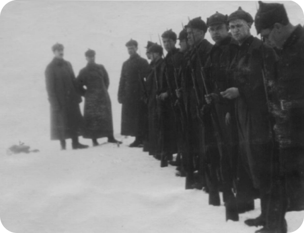
медицинской академии (1935 год)
Вспоминая, он говорил, как трудно привыкал к медицине, тяжело было работать в “анатомичке”, но он пересилил себя и вскоре стал одним из лучших курсантов, Сталинским стипендиатом.
Его записи лекций и практических занятий были образцовыми, на них он не жалел времени и сил. Обладая способностью быстро и точно записывать содержание лекций, он, тем не менее, набело переписывал их по вечерам, не изменяя этому правилу все годы учебы. И не просто переписывал, а серьезно перерабатывал, обращаясь к учебникам, методическим пособиям, другим материалам.
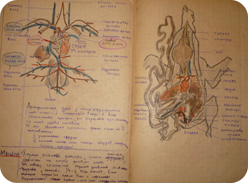
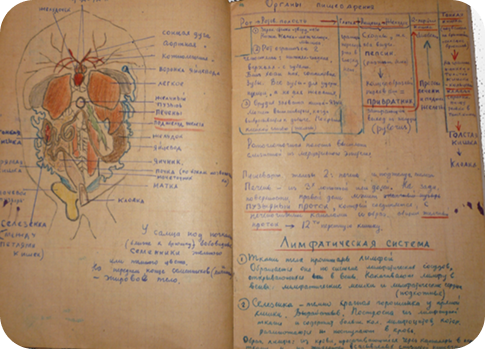
В 1939-40 гг. во время военного конфликта с Финляндией многие профессора, преподаватели, доценты и ассистенты академии получили назначение на ответственные участки фронта. С ними поехали почти все слушатели V-го курса, среди которых был и Николай Николаевич. Он служил в должности врача 3-го батальона и политруком 3-й пулеметной роты 701-го стрелкового полка 142 стрелковой дивизии.
По окончании советско-финляндской войны слушатели курса вернулись в академию для продолжения учебы. Но им снова пришлось прервать учебу. Летом 1940 года по заданию командования Красной Армии V курс в полном составе участвовал в освобождении Бессарабии, Литвы и Латвии. Николай Николаевич выполнял обязанности врача 556-го стрелкового полка 169-й стрелковой дивизии. В этой операции был приобретен богатый опыт медико-санитарного обеспечения войск в походных условиях.
Участие личного состава курса в боевых операциях и походах отодвинуло государственные экзамены, которые состоялись лишь в ноябре 1940 года. Николай Николаевич с отличием окончил академию и был оставлен адъюнктом на кафедре факультетской хирургии, возглавляемой профессором Владимиром Николаевичем Шамовым.
В последних числах июня 1941 г. он приступил к формированию медсанбата. Именно в эти тяжелые дни произошла его первая встреча с будущей супругой.
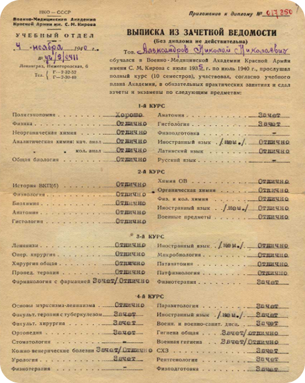
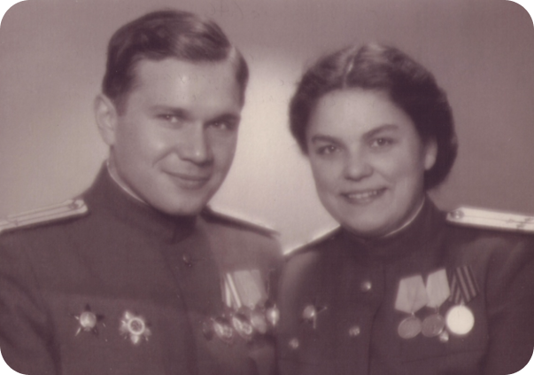
Н. М. Александрова
Продвигаясь с войсками 1 Украинского фронта, помимо Киевской операции, участвовал в оказании помощи раненым в Львовско-Сандомирской, Висло-Одерской, Нижне- и Верхне-Силезской операциях, а также в Берлинской наступательной операции. Дойти до Берлина было заветной мечтой всех участников войны. Однако по распоряжению командования госпиталь был направлен к Дрездену, там Николай Николаевич и встретил День Победы.
За хорошую работу на I Украинском фронте он был дважды отмечен правительственными наградами: в сентябре 1944г. – орденом Отечественной войны I степени и в мае 1945 г. – вторым орденом Боевого Красного Знамени.
В тридцатилетнем возрасте у него был обнаружен туберкулез. Николай Николаевич чувствовал себя неважно, но продолжал усиленно готовиться к сдаче кандидатского экзамена по английскому языку, обрабатывал собственные наблюдения по лечению нейрохирургических раненых. Кандидатскую диссертацию он защитил в срок (в 1950 г.) и был оставлен для дальнейшей работы в академии – в клинике факультетской хирургии.
В 1951 году Николай Николаевич был включен в состав большой группы медиков, которая в течение 6 месяцев работала в условиях военных действий в Корее. Он руководил нейрохирургами, работавшими при ХППГ, где при лечении ранений черепа и головного мозга с целью профилактики и лечения инфекционных осложнений применялись антибиотики. Но литературные данные по этому вопросу были недостаточными и противоречивыми. Николай Николаевич нес круглосуточные дежурства и всех, нуждающихся в операции, оперировал сам. По его инициативе в клинике была создана специальная лаборатория для изучения концентрации антибиотиков в организме раненых в зависимости от способов их введения и применяемых доз.
За это Николай Николаевич был трижды отмечен правительственными наградами: вторым орденом Красной звезды, орденом Свободы и Независимости КНДР и третьим орденом Боевого Красного Знамени.
3 сентября 1960 г. был подписан первый приказ по Институту основателем и первым директором Н.Н.Александровым.
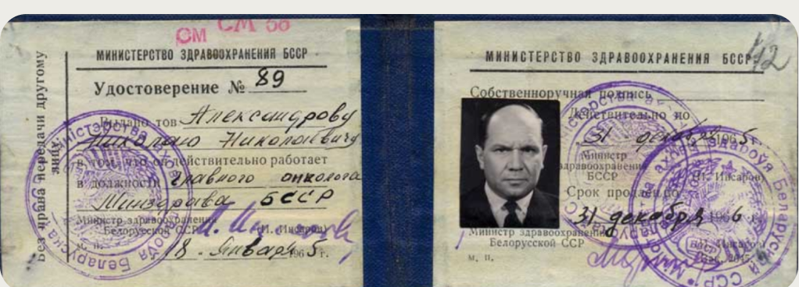
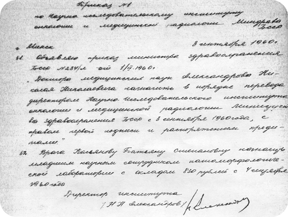
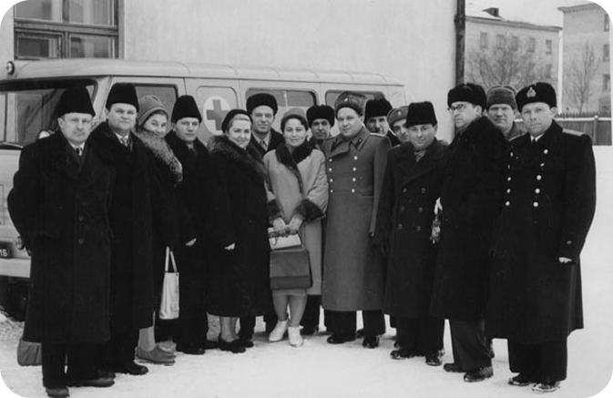
В 1961 году под Минском в Боровлянах начато строительство Бел НИИ ОМР. Завершено строительство второй очереди института.
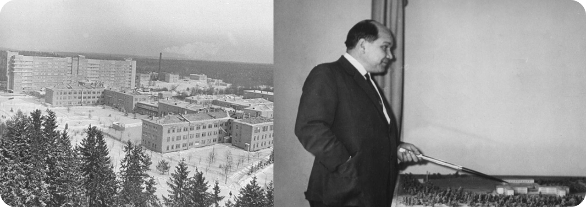
В 60-е Николай Николаевич уделял много внимания проблемам лечения запущенных форм, метастазов и рецидивов рака молочной железы, делился опытом организационной работы по улучшению раннего выявления и своевременного лечения онкологических больных, ставил задачи дальнейшего развития противораковой борьбы в республике.
В эти же годы под его руководством была осуществлена значительная работа по изучению эффективности, усовершенствованию и внедрению в практику современных методов радиохирургического лечения рака желудка, прямой кишки и других органов. Созданный им институт явился практически первым учреждением в стране, начавшим изучение этого вопроса.
В 1977 г. присвоено высокое звание Героя Социалистического труда.
Своим опытом по организации онкологической помощи в Беларуси Николай Николаевич делился на различных республиканских медицинских форумах, на заседаниях, проводимых с участием социалистических стран, в период командировок в США, ГДР, Австрию, Швейцарию, Нидерланды.
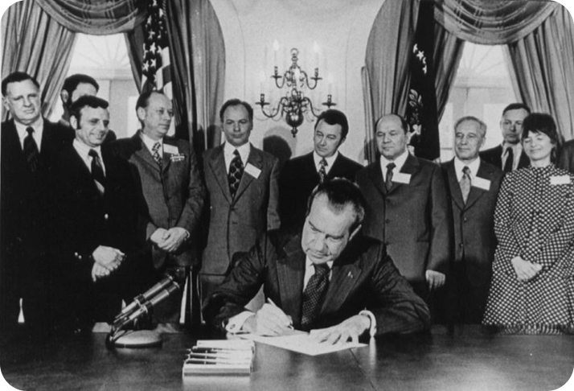
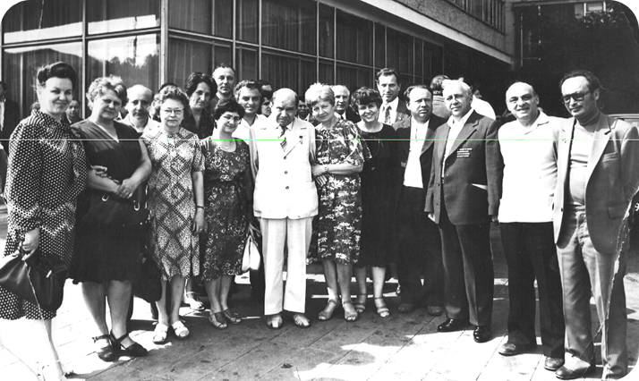
Умер Николай Николаевич Александров 7 октября 1981 года.
СОХРАНЕНИЕ ПАМЯТИ
В 1984 году на фасаде здания главного административного корпуса института, который Н. Н. Александров возглавлял более двадцати лет, торжественно открыта мемориальная доска, а в 1997 году Научно-практическому центру онкологии и медицинской радиологии Министерства здравоохранения Республики Беларусь присвоено имя его основателя и первого директора Героя Социалистического Труда Н. Н. Александрова.
В 2008 году именем Н.Н. Александрова названа улица микрорайона “Зелёный Бор” в аг. Лесной, населённом пункте, где и расположен НИИ онкологии медицинской радиологии, возглавляемый Александровым.
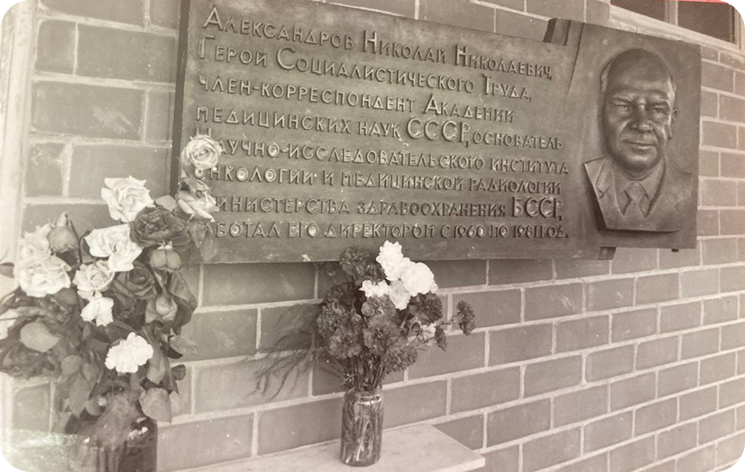